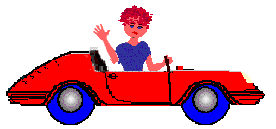

<body id="myBody"  style=" background-image: url('myDot1.png'); background-repeat :  no-repeat;  ">

<input type=button value="Background Go" onclick="{
       myX = 0
       myY = -475
       myCounter1 = setInterval(function(){   
             myX += -1;
             myY += 0;
             document.getElementById('myBody').style.backgroundPosition = myX + 'px '+ myY+'px';

      }, 30);    // every 30 milliseconds

}">


<input type=button value="Background Stop" onclick="{
   clearInterval( myCounter1)

}">



</body>
